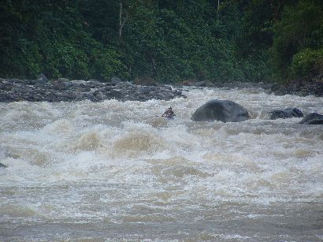

‘La indecisión es la llave a la flexibilidad’
|
||
‘La indecisión es la llave a la flexibilidad’
|
|
********************************************************************************************* Newer news can be found on scotlandnews |
| New video clip. | ********************************************************************************************* Our video editing department (Ferg) in conjunction with first descents (John) bring you another video clip. This one summarises the Central American section of our trip. Go here: Costa Rica video |
| December 23, Pasqua Section of the Rio Reventazon, Costa Rica. | ********************************************************************************************* For the eve of Christmas Eve paddle we headed back to an old favourite - the Pasqua Section of the Rio Reventazon.  |
| Christmas Eve, Pasqua Section of the Rio Reventazon, Costa Rica. | ********************************************************************************************* Did I mention that we liked the Pasqua Section of the Rio Reventazon? On Christmas Eve we returned, this time with Diego �Easy Money� Rodriguez, shown here styling the Mar del Norte rapid.
Afterwards we went to Patricia�s �Lost Souls� barbeque. There�s nothing like an outdoor barbeque on Christmas Eve. |
| Christmas Day, Pejibayi, Costa Rica. | ********************************************************************************************* For Christmas Day, a traditionally quiet day in Costa Rica (Christmas Eve is the big family day here) we assembled all the stranded gringos and headed for a mellow day on the Pejibayi. Here�s David of Huge Experiences on the little playwave...
Here�s French Canadian Simon on the playwave...
We haven�t had a quiz for a while, so have a look at the following pictures and answer this question: On Christmas, who do we love?
For bonus points, can you spot the difference between the two pictures?
|
| Stephen�s Day, Poza Azul, Costa Rica. | ********************************************************************************************* After the excesses of Christmas, there�s nothing like throwing yourself off a waterfall. We went to Poza Azul (Blue Pool) to do just that.
The photo is a little blurry because gravity insists on an acceleration of 9.8 metres per second squared. We are lobbying to have it reduced to about 5 metres per second squared so we can get some decent shots. |
| December 27, Rio Volcan, Costa Rica. | ********************************************************************************************* The Rio Volcan is a fun paddle, similar in character to some stuff at home. It is a tributary of the Rio Sarapiqui, so the last few km is a high volume wavetrain run.
|
| December 28, Rio Puerto Viejo, Costa Rica. | ********************************************************************************************* After four days of torrential rain, this is what the takeout for the Rio Sucio looks like.
We decided that it would probably beat the living daylights out of us, so we decided against getting on. Instead we went to the nearby Rio Puerto Viejo, and it beat the living daylights out of us. We have no footage or photos of this trip, as we were busy with more urgent safety-related concerns. An artist�s impression of what happened will follow soon.
The following day we recovered both boats and assorted equipment. The only thing missing was the front pillar of Ferg�s boat. |
| December 30, La Paz, Costa Rica. | ********************************************************************************************* We looked at La Paz waterfall for a while and thought about it for a few days. It�s been done, but not by us.
For scale, look at the tourist on the the ledge on the left of the picture. The problem isn�t the 18 metre drop, it�s the somewhat more technical 9 metre drop above it. To get to the second fall you have to run the first drop, and the pool between them is walled in and inaccessible from the bank. If you run the first fall and mess it up, you�re still going to have to run the second one. The last guy to run it had a deck implosion on the first drop... Maybe next time... |
| Random Orange Thing, Costa Rica. | ********************************************************************************************* At this time of year, Dashboard Guatemalan Jesus brings you a sign - a sign of huge peace for the coming year.
|
| New Years Eve, Costa Rica. | ********************************************************************************************* For us this year, Kerry was held in Turrialba. We assembled as many Canadians, Brits, Danes, and assorted other international river rats as we could find. Naturally the best thing to do was shotgun beers in the street.
Then we sung a rousing rendition of Christmas Tree (they all learned the words really quickly; surely a testament to something) and the Simon Barry song. Hey Satu, Mette and Graham say hi.
|
| Early New Year, Dominical, Costa Rica. | ********************************************************************************************* Inevitably, it all caught up with us and we repaired to the beach.
It was also time to say goodbye to an important team member, the Toyota. Our last day at the beach was spent hanging out under the coconut trees and eating coconut. Except for Ferg, who has an irrational dread of coconuts.
|
| Random Orange Bikini, Dominical, Costa Rica. | ********************************************************************************************* This is by special request for John who wanted pictures of random scantily-clad girls with a hint of orange. By the way, thanks for hosting the video clips. Happy �surfing� in Oz.
|
| Rio Toro, January 8, 2005, Costa Rica. | ********************************************************************************************* On our last full day in Costa Rica we returned to the river we had attempted on the first. As you might recall, this is the one on which Simon busted his boat. This time, we had a great run...
...in a spectacular setting...
...the takeout is at Recreo Verde thermal springs. The shuttle driver was an hour late picking us up, but it�s not really a hardship. The Rio Toro was one of highlights of the Costa Rica leg of the trip, from a point of view of kayaking, setting, and takeout. |
| Last morning in Costa Rica, January 9, 2005. | ********************************************************************************************* At the airport in San Jose, Costa Rica, about to leave for Quito, Ecuador. The thumbs-up is from Coci, the proud new owner of the Toyota. Cafe Toyota has been an important member of the team up to this point, and while it will be sorely missed, particularly when we have to carry everything ourselves, we have a fine replacement flying in from Dublin this very day.
|